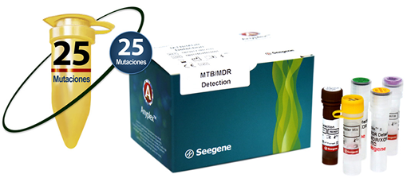

ANYPLEX™ II MTB/MDR DETECTION

INDICACIÓN DE USO:
La prueba AnyplexTM II MTB/MDR Detection es una prueba diagnóstica y cualitativa in vitro para la detección simultánea de Mycobacterium tuberculosis y su resistencia a fármacos antituberculosos de primera línea (isoniazida y rifampicina) en pacientes sintomáticos.
Analitos:
• MTB.
• Resistencia múltiple a fármacos (MDR):
- Resistencia a isoniazida (7 mutaciones).
- Resistencia a rifampicina (18 mutaciones).
• Control Interno (CI).
Muestras:
• Esputo.
• Lavado bronquial.
• Tejido fresco.
• Cultivos.
Equipos compatibles:
• PCR en tiempo real:
- CFX96TM (Bio-Rad).
CARACTERÍSTICAS:
• Detección simultánea de Mycobacterium tuberculosis y 25 mutaciones asociadas con MDR-TB en una sola reacción.
• WTC* (control cepa silvestre) y control interno (CI) para la validez del ensayo.
• Uso del sistema UDG para prevenir la contaminación por arrastre.
• Interpretación de datos sencilla mediante el uso del Visualizador de Seegene.
* WTC - La especificidad de los oligos dirigidos a las mutaciones en la prueba AnyplexTM II MTB/MDR Detection, puede confirmarse mediante control de cepa silvestre (WTC).
Visualizador Seegene:
• Análisis e interpretación de resultados rápidos y sencillos.
• Interfase especializada para pruebas multiplex.
• Enlazable a LIS.
• Entrada de datos del paciente a través del sistema de código de barras.
• Impresión en varios formatos.
• Resultados descargables en archivo CVS.
• Visualización conveniente para el análisis cuantitativo de resultados.
INFORMACIÓN DE PEDIDO:
|
Nombre del producto |
Catálogo No. |
Presentación |
|
Anyplex™ II MTB/MDR Detection |
TB7301Y |
50 rxns |
PUBLICIDAD DIRIGIDA A
PROFESIONALES DE LA SALUD
Registro Sanitario No.: 2007R2016 SSA
Aviso de Publicidad No.: 173300202C3476
DATOS COMPLEMENTARIOS: Para mayor información comunicarse a:
amplibio-seegene diagnostics, S.A.p.i. DE C.V.
Teléfonos: (55) 5035-9808, 5377-1609,
5377-1615, 5377-1612
www.asdx.mx